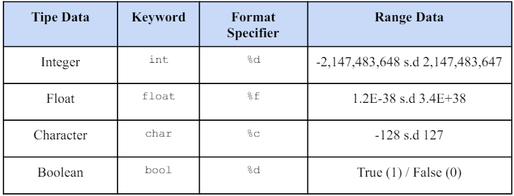
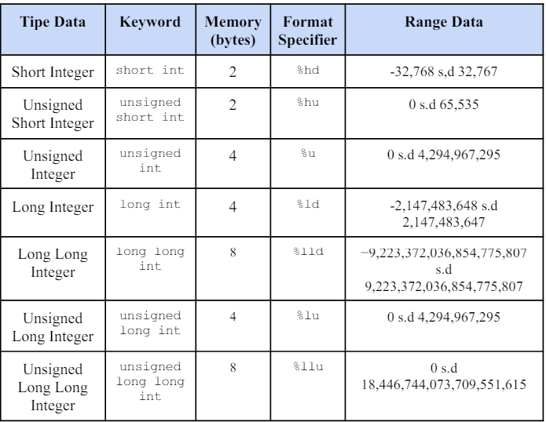
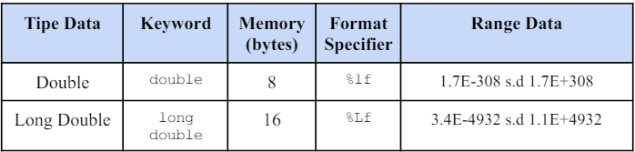
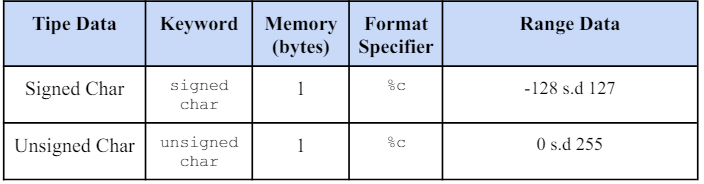
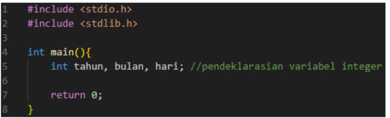
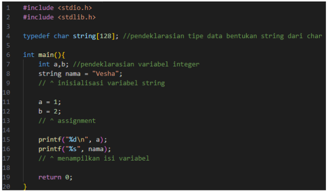
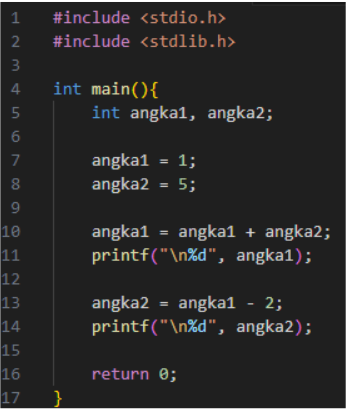

19-06-2024
120k Suka
Dalam pemrograman komputer, manipulasi data adalah inti dari operasi program. Data yang ada di dalam memori diklasifikasikan berdasarkan jenisnya, yang disebut sebagai tipe data. Klasifikasi ini penting agar compiler dapat memahami bagaimana data tersebut akan digunakan dan memori yang dibutuhkan. Tipe data secara umum dibagi menjadi dua kategori utama: Tipe Data Primitif dan Tipe Data Bentukan.
• Tipe Data Primitif
Tipe data ini merupakan tipe data dasar yang paling umum dan disediakan secara langsung dalam bahasa pemrograman yang digunakan. Berikut tipe data primitif yang tersedia di Bahasa pemrograman C.

•> IntegerTipe data yang berisi bilangan bulat. Pemanggilan pada bahasa C menggunakan %d. Contoh: -1, 0, 100. Terdapat pula tipe data integer yang dapat menyimpan lebih banyak maupun lebih sedikit dari integer, yaitu:  Tulisan "unsigned" berarti bilangan bulat tanpa tanda positif atau negatif, sehingga hanya dapat menampung bilangan bulat positif mulai dari 0. "Long" digunakan untuk menambah batas maksimal penyimpanan data integer yang awalnya hanya -2,147,483,648 s.d 2,147,483,647 menjadi range yang tersedia di tabel tersebut, sedangkan "short" digunakan untuk mengurangi batas/range dari integer.
•> FloatTipe data yang berisi bilangan desimal. Pemanggilan pada bahasa C menggunakan %f. Contoh: -0.1, 0.003 Terdapat juga tipe data integer yang dapat menyimpan lebih banyak maupun lebih sedikit dari float, yaitu:  Tipe data float dan double digunakan untuk menyimpan bilangan real. Float menampung hingga 7 digit desimal, sedangkan double menampung hingga 16 digit desimal. Perbedaan kedua ini dapat sangat berpengaruh memilih tipe data yang tepat sangat penting untuk menghindari kesalahan hasil dalam program.
•> CharacterTipe data yang hanya menyimpan 1 huruf atau 1 karakter. Pemanggilan pada bahasa C menggunakan %c. Contoh: ‘a’, ‘@’ Terdapat juga tipe data integer yang dapat menyimpan lebih banyak maupun lebih sedikit dari character, yaitu:  Signed char dapat diartikan juga sebagai char, dikarenakan range data yang masih sama sehingga tidak harus dituliskan signed secara default untuk menggunakan char.
•> Boolean
Tipe data yang memiliki 2 nilai, yaitu True atau False. Tipe data ini juga merupakan tipe data tambahan dari library
• Tipe Data Bentukan
Tipe Data Bentukan adalah tipe data yang didefinisikan atau dibuat sendiri oleh programmer dan merupakan turunan dari Tipe Data Primitif atau lainnya. Salah satu yang sering digunakan adalah String, seperti typedef char string[50]; yang berfungsi menggabungkan karakter char sebanyak 50, biasanya untuk menginput data seperti nama.
•> Variabel
Tipe Data adalah jenis nilai, sedangkan Variabel adalah tempat penyimpanannya (nilai). Variabel menampung data yanf ditentukan oleh tipe data dan memerlukan deklarasi, yaitu proses pembuatan dengan mengetik tipe data diikuti nama variabel yang diinginkan. Beberapa variabel dengan tipe data yang sama dapat dideklarasikan sekaligus.

Aturan penulisan nama Variabel:
• Harus dimulai dengan huruf alfabet, tidak boleh dimulai dengan angka, spasi, atau karakter khusus lainnya.
• Case sensitif (huruf kapital/kecil mempengaruhi)
• Karakter penyusun nama hanya boleh: alfabet, angka, dan “_” (underscore)
• Nama variable tidak boleh pakai nama yang udah ada di pemrograman C
• Tidak boleh dipisahkan dengan spasi
• Panjang variabel tidak terbatas
• Semua variabel yang dipakai harus dideklarasikan terlebih dahulu.
• Setiap akhir code wajib diberikan titik koma (;) agar tidak error.
•> Assignment, Inisialisasi, dan InputSetelah variabel dideklarasikan, kita dapat melakukan inisialisasi, assignment, dan operasi pada variabel tersebut. Assignment adalah pemberian nilai pada suatu variabel. Deklarasi yang disertai assignment proses tersebut disebut inisialisasi. 
•> Ekspresi Aritmatika, dan Ekspresi Relasional
Dalam bahasa pemrograman C, ada dua jenis operasi: ekspresi aritmatika yang mengombinasikan variabel, konstanta, dan operator matematika untuk menghasilkan nilai numerik, serta ekspresi relasional digunakan untuk membandingkan dua nilai dan menghasilkan nilai logika (benar atau salah).
Contoh ekspresi aritmatika:
1. a = a + b;
2. Jari_jari = 3.14 * r * r;
3. tanggal5 = getTanggal(tanggal) * 5;
Contoh ekspresi Relasional:
1. npm == 230712436; (Jika npm sama, maka nilai true (1), selain itu akan false (0)),
2. tahun < 2024; (Jika tahun dibawah 2024, maka nilai true (1), selain itu akan false (0)),
3. angka % 2 == 0; (Jika angka habis dibagi 2, maka nilai true (1), selain itu akan false (0)),
• Sekuens
Algoritma adalah sekumpulan instruksi yang dijalankan secara berurutan (sekuensial). Secara umum aturan sekuens algoritma adalah sebagai berikut:
1. Tiap instruksi dilaksanakan satu persatu dan biasanya tiap instruksi dibaca dari atas kebawah dan dari kiri ke kanan,
2. Tiap instruksi dilaksanakan satu kali,
3. Urutan instruksi yang dilaksanakan pemroses sama dengan urutan aksi sebagaimana tertulis dalam algoritma yang ada, dan
4. Akhir dari instruksi terakhir merupakan akhir algoritma.
 Nilai angka1 akan menjadi 6 di saat terjadi operasi aritmatika, dan menampilkan 6, lalu angka2 akan bernilai 4 dikarenakan operasi tersebut terjadi setelah operasi penambahan pertama terjadi, dan akan menampilkan 4 untuk angka2. Pemilihan
5 Komentar
Komentar Pengguna
Mahasiswa Informatika
19-06-2024Kelvin deodorant
19-06-2024Verdi Tokyo Mokyo
20-06-2024Alfredo Pangsit
20-06-2024Kelvin Majapahit
22-06-2024Verdi Hime
23-06-2024